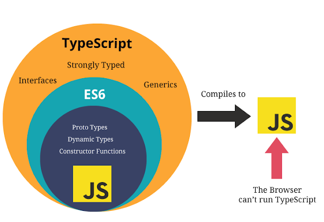
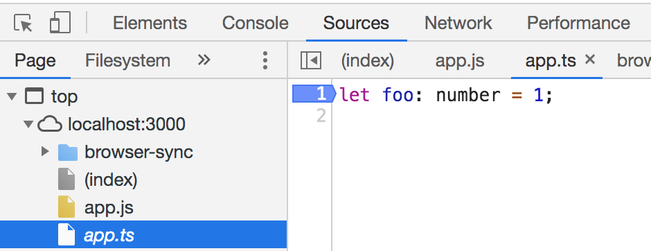

TypeScript
Table of Contents
1 TypeScript

TypeScript is a wrapper/superset of JavaScript. TypeScript code is compiled down to JavaScript code.
TypeScript is strongly typed and OO.
1.1 Static Typing
Types are static in TypeScript: after declaring a variable as a certain type (implicitly or explicitly), the variable cannot be assigned with values of other types:
let foo = 'bar'; // Declare implicitly as string foo = 1; // Assign a number value, compiler error
2 Type
2.1 Number
TypeScript | Handbook | Basic Types | Number
Numbers include both int and float:
let foo = 1; let bar = 0.5;
2.2 Array
TypeScript | Handbook | Basic Types | Array
let foo = [1, 2, 3]; // Inferred as number[] let foo: number[] = [1, 2, 3]; let foo: Array<number> = [1, 2, 3]; foo.push('bar'); // Error: string not assignable to type number foo = ['bar']; // Error: string[] not assignable to type number[]
2.3 Tuple
TypeScript | Handbook | Basic Types | Tuple
Tuple is basically an array whose elements can have different types.
let foo: [string, number]; foo = ["bar", 1]; foo = [1, "bar"]; // Compiler error
2.4 Enum
TypeScript | Handbook | Basic Types | Enum
enum Foo {First, Second, Third} // Enum values start from 0 by default let bar: Foo = Foo.First; // bar == 0 let bar: Foo = Foo.Second; // bar == 1 let bar: Foo = Foo.Third; // bar == 2 enum Foo {First, Second = 100, Third} // Change one default value, following values increment on the basis of it let bar: Foo = Foo.First; // bar == 0 let bar: Foo = Foo.Second; // bar == 100 let bar: Foo = Foo.Third; // bar == 101
2.5 Any
TypeScript | Handbook | Basic Types | Any
let foo: any = 'bar'; foo = 1;
If a variable is declared without assigning any value, it is implicitly of type any, and can be assigned with any value:
let foo; foo = 1; foo = 'bar';
2.6 Void
Void type functions don't return values:
function foo(): void { }
2.7 Null & Undefined
- TypeScript | Handbook | Basic Types | Null and Undefined
- TypeScript | Handbook | Advanced Types | Nullable Types
null and undefined are both types and values:
let foo: null = null; foo = 1; // Error, 1 is not assignable to type null
By default, null and undefined are valid values for any type:
let foo: string; foo = null; // OK foo = undefined; // OK
To prevent null and undefined from being set to typed variables, set compiler option strictNullChecks to true:
// strictNullChecks set to true let foo: string; foo = null; // Error foo = undefined; // Error
To explicitly allow null values, use union type:
let foo: string | null | undefined; foo = null; // OK foo = undefined; // OK
2.8 Object
TypeScript | Handbook | Basic Types | Object
let foo: { one: string, two: number }; // With prop names and types let bar: { [s: string]: number }; // With prop name types and value types
An object once declared, the names and types of the properties are fixed:
let foo = { one: "bar", two: 1 }; foo = {}; // Error: Type "{}" is missing the following properties // from type "{ one: string; two: number; }": one, two foo = { a: "bar", b: 1 }; // Error: Type "{ a: string; b: number; }" is not // assignable to type "{ one: string; two: number; }" foo = { two: 2, one: "bar" }; // Changing order of properties is OK
2.9 Never
TypeScript | Handbook | Basic Types | Never
never is the return type for a function that always throws an exception or never returns:
function error(message: string): never { throw new Error(message); }
3 Type Usage
3.1 Assertion
if (typeof foo === "number") { }
3.2 Union
TypeScript | Handbook | Advanced Types | Union Types
A union type describes a value that can be one of several types:
let foo: number | string | boolean = 1;
3.3 Alias
TypeScript | Handbook | Advanced Types | Type Aliases
Type aliases are names that refer to existing types:
type Name = string; type NameResolver = () => string; type NameOrResolver = Name | NameResolver; function getName(n: NameOrResolver): Name { if (typeof n === "string") { return n; } else { return n(); } }
Use type alias to define reusable complex types:
type Complex = { data: number[], output: (all: boolean) => number[] }; function getData(arg: Complex) { return arg.data; }
4 Generic
TypeScript | Handbook | Generics
To write flexible functions that take more than one type:
function foo(arg: any): any {} // Type "any" is too generic, argument type info // is lost when using this function. foo('bar'); // OK, but we don't know the return type. function foo<T>(arg: T): T {} // Using generic, function caller can pass the // argument type to the function via T. foo<string>('bar'); // We know return type is string. foo('bar'); // Use type inference. function foo<T>(arg: T[]): T { // Generic type array return arg[0]; } foo<string>(['bar']); function foo<T, U>(arg: T): U {} // Multiple generic types foo<string, number>('bar'); // We know return type is number
4.1 Constraint
TypeScript | Handbook | Generics | Generic Constraints
function foo<T extends number>(arg: T): T {} function foo<T extends number | string>(arg: T): T {}
4.2 Generic Class
TypeScript | Handbook | Generics | Generic Classes
class Tool<T> { combine: (a: T, b: T) => T; } let numberTool = new Tool<number>(); numberTool.combine = (a: number, b: number) => a + b; numberTool.combine(1, 2); let stringTool = new Tool<string>(); stringTool.combine = (a: string, b: string) => a + ' ' + b; stringTool.combine('foo', 'bar');
5 Function
5.1 Function Type
TypeScript | Handbook | Functions | Function Types
Function types act like variable types, functions of a certain type can be assigned to variables of the same type:
function foo(): number {return 1;} // Type: () => number function bar(): string {return '';} // Type: () => string let a: () => number; a = foo; // Ok a = bar; // Compiler error
Function types can be assigned to object properties to make complex types that act like classes:
let foo: { one: number[], two: (arg: string) => string[] };
5.2 Argument Type
const foo = (arg: string) => arg; foo('bar'); const foo = (arg: { name: string }) => arg.name; // Requires to be an object with a prop "name", const bar = { name: 'bar', desc: 'This is bar.' }; // There can be other props foo(bar);
6 Class
Class example:
class Greeter { message: string; // Member is public by default constructor(message: string) { this.message = message; } greet() { return 'Hello, ' + this.message; } } let greeter = new Greeter('world'); console.log(greeter.greet());
6.1 Constructor
Adding access modifiers such as public to constructor parameter is a shortcut for setting that parameter to the class property:
class Foo { constructor(public bar: string) { // Implicit: this.bar = bar; } }
6.2 Accessor
TypeScript | Handbook | Classes | Accessors
class Employee { private _fullName: string; get fullName(): string { return this._fullName; } set fullName(newName: string) { this._fullName = newName; } }
6.3 Readonly
TypeScript | Handbook | Classes | Readonly Modifier
class Foo { constructor(public readonly bar: string) {} } let foo = new Foo('bar'); console.log(foo.bar); // Read is OK foo.bar = 'new'; // Write is not allowed
6.4 Inheritance
TypeScript | Handbook | Classes | Inheritance
class Foo { constructor(public x: string) { } } class Bar extends Foo { constructor(x: string, public y: number) { super(x + ' from Bar'); // Calls parent constructor } } let bar = new Bar('Hello', 1); // { x: 'Hello from Bar', y: 1 }
7 Interface
TypeScript | Handbook | Interfaces
Interface represents the requirements of what properties an object should have:
interface Foo { bar: string; } function exec(foo: Foo) { return foo.bar; } let one = { bar: 'one', x: '' }; exec(one); // OK exec({ bar: 'one' }); // OK exec({ bar: 'one', x: '' }); // Error: object literak can only have known prop let two: Foo; two = { bar: 'two' }; // OK two = { bar: 'two', x: '' }; // Error: object literak can only have known prop
7.1 Any Property
interface Foo { bar: string; [prop: string]: any; // Allows any additional property }
7.2 Optional Property
interface Foo { bar: string; extra?: number; // Optional property }
7.3 Function Property
interface Foo { bar: string; exec(v: number): string; } let one = { bar: 'one', exec(v: number) { return this.bar + ' = ' + v; } }; one.exec(1); // one = 1
7.4 Function Interface
Interface can define the type of a function:
interface Compare { (a: number, b: number): boolean; } let isBigger, isSmaller: Compare; isBigger = (a: number, b: number) => (a > b); isSmaller = (a: number, b: number) => (a < b);
7.5 Implement Interface
Classes can implement interfaces:
interface Foo { bar: string; exec(v: number): string; } class MyFoo implements Foo { bar: string; extra: string; // Can have extra members exec(v: number) { return this.bar + ' = ' + v; } } let foo = new MyFoo(); foo.bar = 'one'; foo.exec(1); // one = 1
7.6 Extend Interface
Interface can extend another interface:
interface Foo { name: string; exec(arg: number): void; } interface Bar extends Foo { desc: string; }
8 Namespace
TypeScript | Handbook | Namespaces
Code can be organized into namespaces to avoid name collisions within the global namespace.
namespace Validation { const lettersRegexp = /^[A-Za-z]+$/; export function isLetters(s: string) { // Members must be exported to be accessible return lettersRegexp.test(s); } } console.log(Validation.isLetters('foo')); // Call function in namespace let isLetters = (s: string) => false; // Function with same name in global namespace console.log(isLetters('foo')); // Call function in global namespace
8.1 Alias
TypeScript | Handbook | Namespaces | Aliases
Use aliases to keep namespaced keywords shorter:
namespace Foo { export class Bar {} } import Bar = Foo.Bar; let bar = new Bar();
8.2 Multiple Files
Namespace can exist across multiple files:
// letters.ts namespace Validation { const lettersRegexp = /^[A-Za-z]+$/; export function isLetters(s: string) { return lettersRegexp.test(s); } } // numbers.ts namespace Validation { const numbersRegexp = /^[0-9]+$/; export function isNumbers(s: string) { return numbersRegexp.test(s); } } // app.ts // Import the namespace files /// <reference path="letters.ts" /> /// <reference path="numbers.ts" /> console.log(Validation.isLetters('foo')); console.log(Validation.isNumbers(123));
8.3 Nested Namespace
Namespaces can be nested:
namespace Foo { export namespace Bar { // Namespace needs to be exported export const message = 'hello'; } } console.log(Foo.Bar.message);
9 Decorator
TypeScript | Handbook | Decorators
A decorator is an expression @decorator that can be attached to declarations of: class, method, accessor, property, parameter.
The expression decorator must evaluate to a function at runtime. Information of the decorated entity, e.g. class constructor, is passed to the function.
9.1 Decorator Composition
Multiple decorator can be applied to one declaration:
function foo(constructor: Function) { console.log('This is foo.'); } function bar(constructor: Function) { console.log('This is bar.'); } @foo @bar class Test {} let test = new Test(); // This is bar. (Latest decorator runs first) // This is foo.
9.2 Decorator Factory
Decorator expressions doesn't need to be a function directly, it can be something that evaluates to a function:
function foo(constructor: Function) {} function bar(constructor: Function) {} function route(callFoo: boolean) { return callFoo ? foo : bar; } @route(true) // Evaluates to foo class ClassOne {} @route(false) // Evaluates to bar class ClassTwo {}
9.3 Class Decorator
Class decorator has one argument which is the constructor:
function foo(constructor: Function) { constructor.prototype.bar = 1; // Add prop constructor.prototype.echo = function() { // Add method console.log(this.bar); } } @foo class Test {} let test = new Test(); test.echo(); // 1
9.4 Method Decorator
Method decorator has 3 arguments:
- The class's constructor for a static method, or the class's prototype for a non-static method.
- The method's name.
- The method's property descriptor. MDN | JavaScript | Reference | Object | defineProperty
function setWritable(isWritable: boolean) { return function(target: any, name: string, descriptor: PropertyDescriptor) { descriptor.writable = isWritable; } } class Foo { @setWritable(true) getValue() { return 1; } } let foo = new Foo(); foo.getValue(); // 1 foo.getValue = () => 2; // OK: function is overwritten foo.getValue(); // 2 class Bar { @setWritable(false) getValue() { return 1; } } let bar = new Bar(); bar.getValue(); // 1 bar.getValue = () => 2; // Error: cannot assign to read-only property
9.5 Property Decorator
Property decorator has 2 arguments:
- The class's constructor for a static property, or the class's prototype for a non-static property.
- The property's name.
9.6 Parameter Decorator
Parameter decorator has 3 arguments
- The class's constructor for a static method, or the class's prototype for a non-static method.
- The method's name.
- The parameter's ordinal index.
10 Command
10.1 Install
npm install -g typescript
10.2 tsc
tsc <options> <file> ... --init # Init config file -p, --project <path> # Specify path or directory of the config file -w, --watch # Watch mode <file> ... # Specify files to compile, ignore include/exclude settings
11 Configuration
11.1 tsconfig.json
Config file tsconfig.json is at the root of a TypeScript project. It specifies the root files and compiler options.
{
"compilerOptions": {
<key>: <value>
},
"files": [ // Include files by absolute or relative paths
<filename>
],
"include": [ // Include files by pattern
<pattern>
],
"exclude": [ // Exclude files by pattern
<pattern>
]
}
11.2 Compiler Options
11.2.1 noEmitOnError
By default, if there is error in the TypeScript code at compile time, e.g. type error, the compiler gives warnings, but still generates the target JavaScript code. This behavior can be changed by setting option noEmitOnError to true.
11.2.2 noImplicitAny
By setting compiler option noImplicitAny to true, compiler will warn about variables of implicit type any:
let foo; // Implicit type "any" foo = 1;
11.2.3 sourceMap
By setting option sourceMap to true, compiler will generate a source map .map for the compiled .js file. With the source map, when debugging JavaScript in browser, breakpoints can be set on the source file .ts:

11.2.4 strictNullChecks
By setting option strictNullChecks to true, compiler will warn about variables that are possibly unassigned with a value, i.e. having value null:
function foo(isTrue: boolean) { let bar: number; if (isTrue) { bar = 1; // This may not happen, "bar" will ends up null } return bar; }